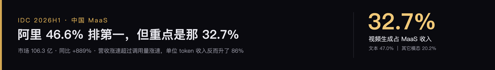
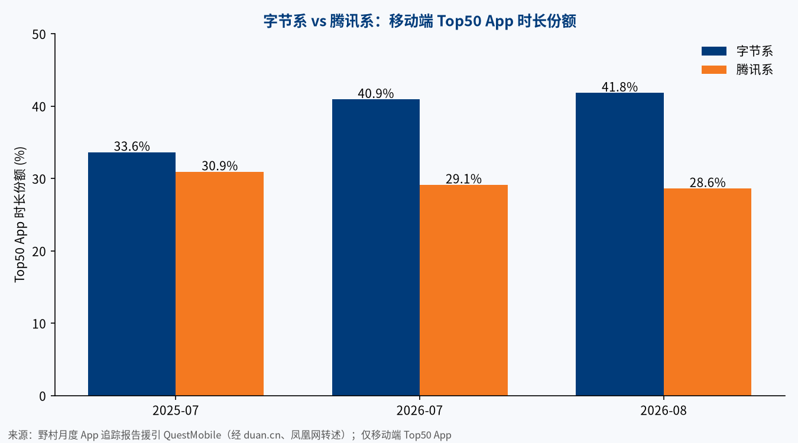
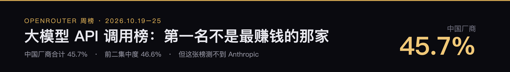
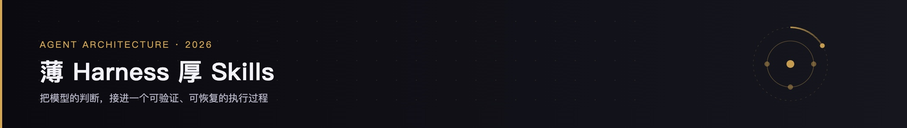
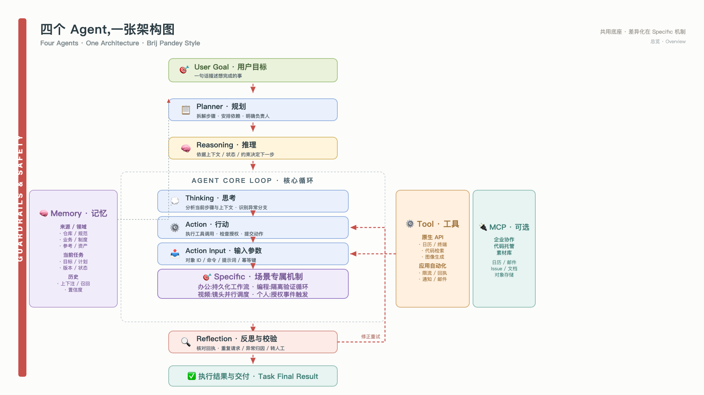
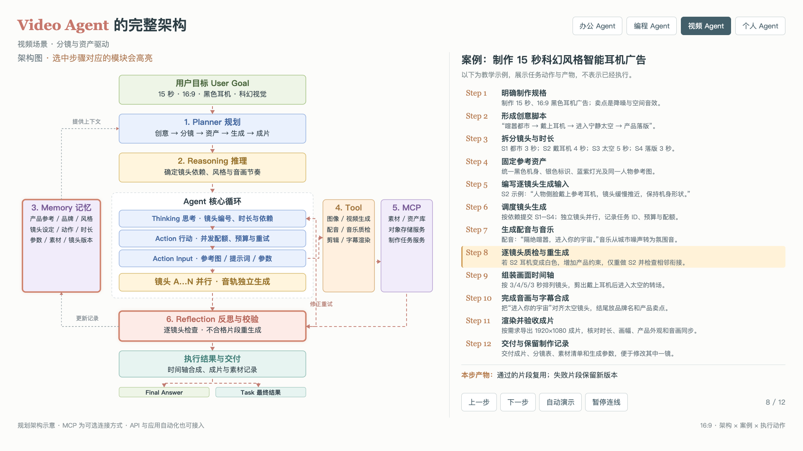
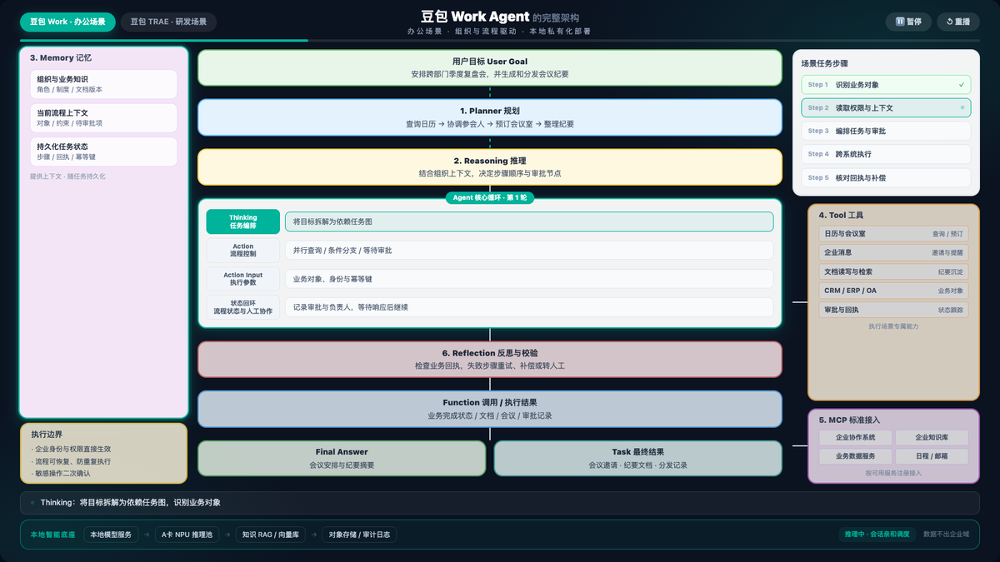

MaaSIDC2026-10-29
阿里 46.6% 排第一，但重点是那 32.7%
中国 MaaS 半年 106.3 亿，同比涨 889%。营收涨得比调用量快，单位 token 收入反而升了 86%——因为视频已经吃掉三分之一的收入。
约7 min read阅读全文 →
来自一线研究的深度行业分析

AI、算力、芯片与市场分析

中国 MaaS 半年 106.3 亿，同比涨 889%。营收涨得比调用量快，单位 token 收入反而升了 86%——因为视频已经吃掉三分之一的收入。

核对秦朔与程苓峰两篇文章的数字，补上 AI 短剧的算力账和东南亚市场。

小微不是一个新 App。它是长在微信里的一层 Agent：在聊天、内容、文档和小程序里随叫随到，替你找信息、做准备，最后一步留给你。截至 2026 年 10 月 28 日，它仍在灰度，官方没有公布用户数。

腾讯在 AI 上打出了两张牌。一张是 WorkBuddy，一个独立的桌面办公 Agent，七个月做到办公 Agent 月活第一。另一张是小微，一个长在微信里的原生 Agent，还在灰度，没有用户数，但背后是 14 亿月活的微信。前者抢新入口，后者守老入口。

把阿里系 App 的最新月活放在一起看，规律很清楚。国内有三个接近十亿月活的超级入口。海外最大的几个电商 App，月活加起来只有淘宝的三分之一左右。国内这套能力出海，靠的是仓、车、补贴这些重资产，所以走得慢。现在阿里押注的新变量是 AI 应用，它更轻，也可能走得更快。

把字节在国内的 App 和它们的海外"兄弟"放到同一张表里，会看到一个反直觉的结果：海外最成功的除了 TikTok，不是内容产品，而是工具。剪映的海外版 CapCut 月活已超过 8 亿；而把国内做到上亿日活的短剧、小说、资讯、音乐搬出去，要么只有千万级用户，要么已经关停。

OpenRouter 周榜：DeepSeek 26.5% 居首，中国厂商合计 45.7%。但 Anthropic 只有 5.5%——不是它弱，是这张榜根本测不到它。三个口径陷阱，每一个都能让人得出相反结论。

离线推理核 DeepInfer（Apache-2.0）与协议层 deepseek-recipe（MIT）开源。$0.15 / $0.6 是闲时 cache miss 价；KV cache、PD 分离、多副本均衡没放，硬件白名单只有 SM100 与昇腾 950。

Agent 不是更聪明的聊天框，它的核心是把模型的判断接进一个可验证、可恢复的执行过程。四组职责、工具设计、上下文口径、Skill 分层、生命周期与评测——配 4 张重绘架构图。

把办公 / 编程 / 视频 / 个人四类 Agent 收进同一张架构图,沿用 Brij Pandey 的视觉语法:7 个核心模块 + 红色虚线流 + 左侧 Guardrails 侧条。Tab 切换展示 Specific 机制差异化,亮 / 暗双主题可切换。

办公、编程、视频与个人助理的专属架构。16:9 页面左侧架构、右侧步骤，点击联动高亮，逐步理解会议协作、代码修复、视频制作与旅行规划。

双产品共享本地模型网关、知识 RAG 与 A卡算力底座。20 节方案含总体业务架构、组网拓扑、推理架构与安全治理；16:9 动画演示办公与研发双场景 Agent 完整执行流程。

东南亚 AIDC 第三枢纽：雅加达单极主导（~75%）+ 巴淡岛承接新加坡外溢（~10%）。2025 运营 1,440 MW → 2026 冲 1.8-2.0 GW → 2030 Mordor 预测 3,560 MW。运营商管道矩阵：DCI ~1,768 + BDx ~842 + Digital Edge ~500。2027-2028 电力接入峰值年（PLN 25 GW 管道 vs 已接入 1,990 MVA）。
2025 年 16.1 → 2031 年 34.8 亿美元（CAGR 13.71%）；IT 负载 821 MW → 3,560 MW（CAGR 19.89%）。DCI 1,755 + BDx 829 + PDG 518 MW 管道矩阵；BDx CGK4 单机架 500 kW 直接芯片液冷锁定 PLN 845 MVA；电力 25,297 MW 管道 vs 已接入 1,990 MVA。
东南亚增速最快：IT 负载 0.77→2.93 GW（CAGR 30.6%）。2026 冲 1.1 GW、2027 1.5 GW、2030 2.93 GW；BOI 2,066 MW 管道。但 2027 中电力风险点——35 GW 申请 vs PDP 8.8 GW。TrueIDC 380 + Gulf/GSA 2,125 + O1 200 MW。
曼谷双核（52%）+ EEC 崛起（41%）+ 1,150 MW 电网增容；三大阵营运营商矩阵 + 美系自建 + 中资双轨；电力 35 GW vs PDP 8.8 GW 风险与 Token 工厂商业模式变革。
柔佛运营 1.1 GW + 管道 8.5 GW，2026 年底一年翻倍到 2.1 GW。但 2027 年撞电力硬约束——TNB 申请 11 GW、2027 年无新增气电。Firmus × OpenAI >900 MW 全客户签约。新增运营商管道矩阵精确到 MW。
东南亚增长最快 IDC 市场：柔佛单极 80% 容量 + 管道 8,542 MW（亚太单一市场最大）。三阵营运营商矩阵、Firmus × OpenAI 900+ MW、美系锚定 + 中资双轨，以及 2027 年电力真空期的供需博弈全拆解。

五层架构拆解三家 Agent 体系：O1 的豆包+扣子+UI-TARS 全栈开源打法、AL 的 Qwen+百炼模型开源打法、O3 的混元+ADP 4.0+WorkBuddy 生态治理打法——谁的基础设施厚、谁的模型生态强、谁的生产治理深？
GPU 第一次被当作 ABS 底层资产。加上 OpenAI 排查每天烧 50 万美元、Anthropic 1 亿美元培训部署大军——算力的账，开始用金融的笔算。

Forbes 称美国 AI 基建总投入或达 10 万亿美元。我拆了原文和 Anthropic 泄露招股书：最贵的不是 GPU，是 80% 照付不议的合同——算力金融化的美国版本。

InterPositive：2022 年秘密创办，2026 年 3 月被 Netflix 以 5.87 亿美元收购。不做文生视频，为每个剧组训专属后期模型。"H3 微调"无来源，开源拆掉模型这堵墙，好莱坞发现墙后面的地是自己的。

Instick、OpenAI Dots、GrokBot、Muse、Manus Q：五款近期主流 Agent 产品洞察。表面拼形态，底下拼的都是同一件事——用户凭什么把授权交给你。


mRNA 在体内「现造」双抗，一针清空 B 细胞——诺华 5.75 亿首付买下艾博生物 ABO2203。
视频模型与 Coding 模型成为商业化主战场，通用 LLM 赛道被地板价击穿后的新定价逻辑。


同一个 AI 战场，文字和视频走的是完全相反的剧本：LLM 是半步之遥，视频生成是事实垄断。
5 个底层机制 + 3 个中国特色 + 单 token 成本结构 + 9 家公司闭环评级——MaaS 销售范式是否值得学。

从 1.2% 到 61%，份额之后的真问题：谁在出海、怎么变现、能否持续——五档玩家地图 + 目标市场拆解。
六大基础设施组件开源，与 NVIDIA 版 API 一一对应；国产大模型首次以自用验证的软件栈反向定义国产算力生态。

同 harness、同 TDD、同项目——GLM-5.2 ≈ Opus 4.7，Sonnet 4.6 低半档但快省，结论附带实战数据。
4090 / 5090 看似便宜 3 倍，但 VRAM、ECC、RMA、服务器适配 4 项硬伤让初创公司 6 个月内多花 76%。
每周一篇，不发水文。退订随时，无垃圾邮件。